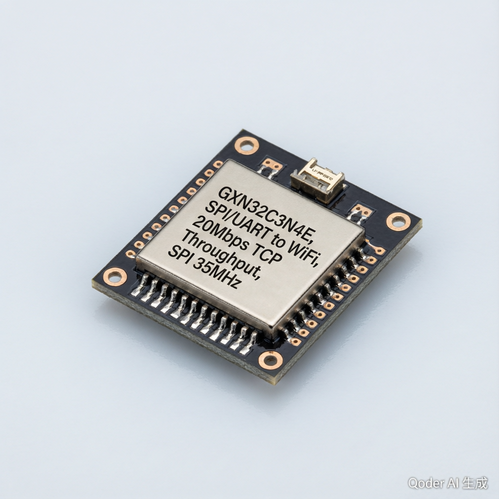

The GXN32C3N4E is a high-speed WiFi transparent transmission module that converts SPI and UART serial data to wireless WiFi communication. With 20 Mbps actual TCP throughput and SPI clock up to 35 MHz, it delivers reliable high-speed wireless data transmission for IoT, industrial automation, embedded systems, and ADC data acquisition applications. It supports up to 4 simultaneous TCP/UDP connections, enabling flexible multi-client communication architectures.
| Parameter | Specification |
|---|---|
| Model | GXN32C3N4E |
| WiFi Throughput | 20 Mbps (TCP actual) |
| SPI Clock | 35 MHz |
| Serial Interface | SPI / UART |
| TCP/UDP Connections | 4-way simultaneous |
| WiFi Standard | 802.11 b/g/n |
| Antenna | U.FL / IPEX connector (external antenna) |
| Applications | ADC Acquisition, IoT, Industrial Automation, Embedded Systems, Communication & Networking |
Wirelessly transmit high-speed ADC sampling data from remote sensors to central monitoring systems via WiFi, eliminating the need for wired connections.
Enable wireless communication between PLCs, sensors, and control systems in factory environments where wired connections are impractical.
Serve as a WiFi bridge for embedded devices, converting UART/SPI data to IP packets for cloud connectivity and remote monitoring.
Add WiFi connectivity to microcontroller-based projects with minimal firmware changes — transparent transmission requires no protocol modification.
Custom firmware, antenna configurations and branding — backed by our in‑house R&D and manufacturing team.
Buy straight from the manufacturer. Competitive wholesale pricing with tiered discounts for distributors and bulk orders.
Worldwide delivery via DHL / FedEx / UPS with export‑grade packaging. Sample units ship within 3–5 business days.
Full documentation and remote engineering support for the entire product lifecycle — 12‑month warranty included.